Cartes et modèles spatiaux
La biomasse du foin baisse-t-elle avec l'altitude sur un plateau de montagne ? Les coordonnées des prairies et la carte, l'altitude lue dans un raster, l'I de Moran des résidus d'un modèle, un modèle additif avec un lissage spatial, et un GeoPackage pour QGIS.
Les données sont simulées. Aucune prairie n'a été fauchée et le relief est inventé : le tableau et le modèle numérique de terrain ont été fabriqués par le script cartes.R, avec une graine fixe, pour ce tutoriel. La biomasse baisse de 0,8 g/m² par mètre d'altitude, et un motif régulier sur le plateau (les sols, la fumure des exploitations) s'y ajoute.
La question et les données
Le foin de 90 prairies de montagne est pesé à la première coupe, sur un plateau de 12 km sur 9 km. La biomasse baisse-t-elle avec l'altitude ? Et que dit la carte de ce que l'altitude n'explique pas ?
Téléchargez prairies.csv (90 lignes, une par prairie) et le modèle numérique de terrain altitude.tif (un GeoTIFF de 13 Ko), dans le même dossier :
| Colonne | Contenu |
|---|---|
| prairie | le nom de la ligne : S01 à S90 |
| X_L93, Y_L93 | la position de la prairie en Lambert-93, en mètres |
| biomasse | la biomasse sèche du foin à la première coupe, en g/m² |
Le tableau n'a pas d'altitude : elle vient du modèle numérique de terrain, un raster de cellules de 50 m, comme l'IGN ou Copernicus les diffusent. Ouvrez le tableau avec Fichier › Ouvrir (Ctrl+O) : 90 observations et 3 variables.
1. Les coordonnées et la carte
Graphiques › Carte (aussi sous le projet dans l'explorateur). La première fois, la vue demande
quelles deux variables donnent la position de chaque observation, et dans quel système de
coordonnées. Nuée les propose d'après leurs noms : X_L93 et Y_L93, en Lambert-93
(EPSG:2154).

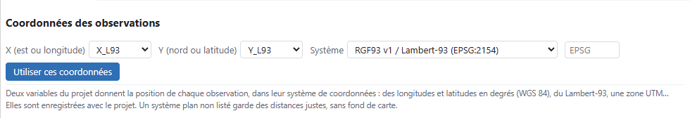

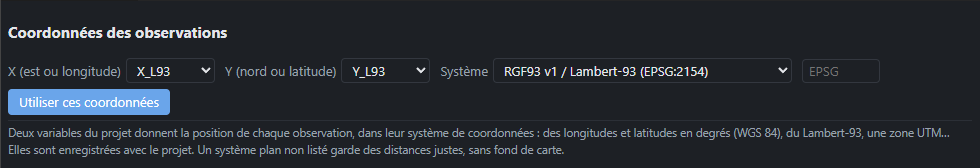
Cliquez sur Utiliser ces coordonnées. Elles sont enregistrées avec le projet, et Ctrl+Z les
retire. Des longitudes et latitudes en degrés seraient du WGS 84 (EPSG:4326) ; une zone UTM, un
autre code EPSG. Couleur : biomasse :

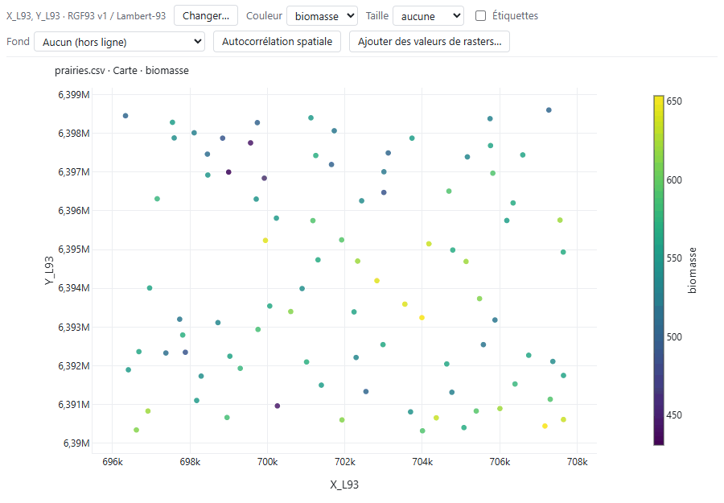

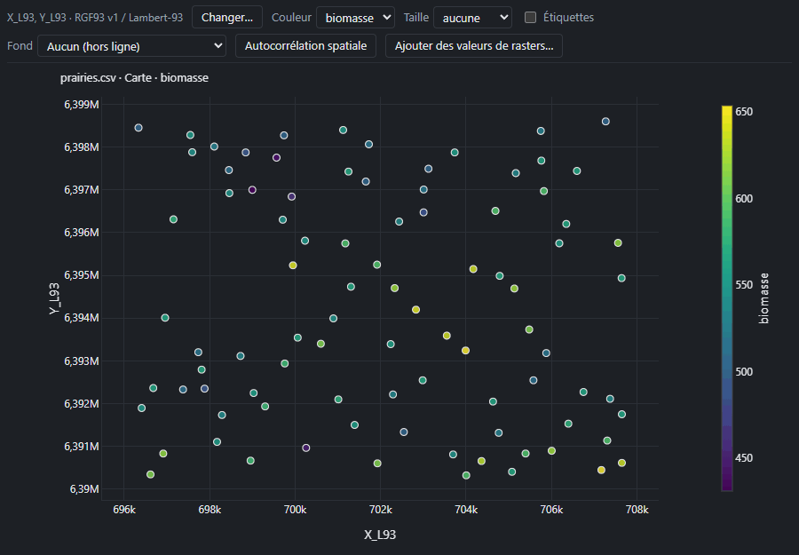
Les points sont tracés à la même échelle sur les deux axes, sans fond : rien ne sort de l'ordinateur. Fond propose OpenStreetMap ou le plan et les photographies aériennes de l'IGN, téléchargés quand on les choisit. La biomasse va de 431,2 à 653,4 g/m², par taches : faible au nord-ouest, plus forte au centre et au sud.
2. L'altitude lue dans un raster
Édition › Ajouter des valeurs de rasters (ou le bouton de la carte) lit la valeur d'un raster à
la position de chaque observation. Choisir des fichiers… : altitude.tif.

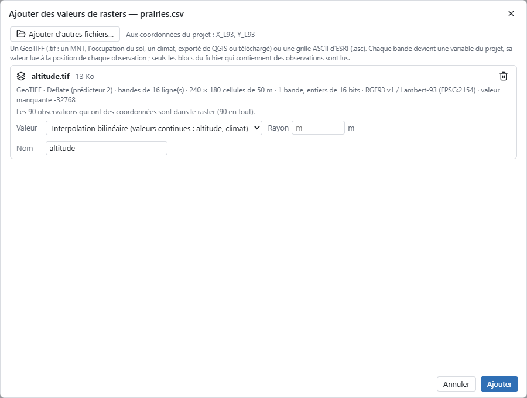

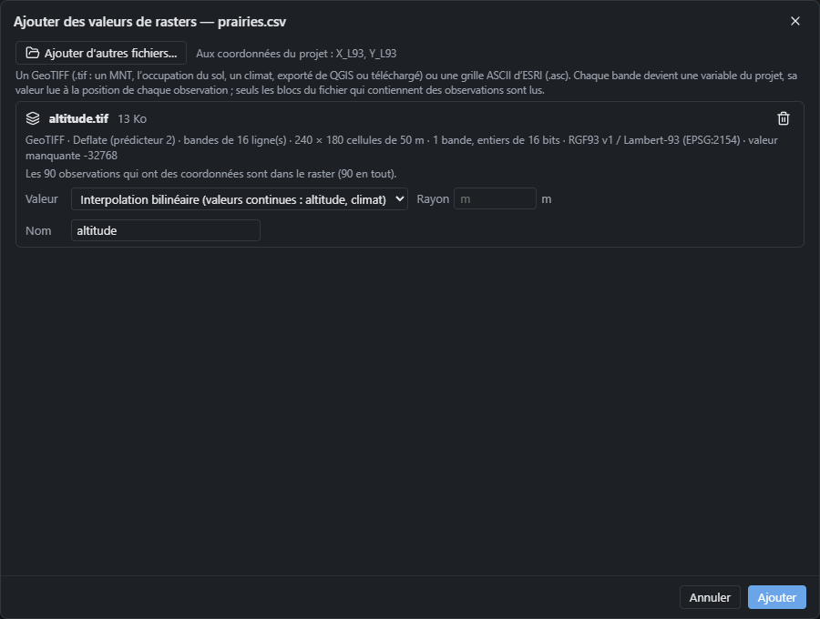
Avant d'ajouter, Nuée dit ce qu'est le fichier : 240 × 180 cellules de 50 m, une bande d'entiers de
16 bits, en Lambert-93, et les 90 prairies sont dedans. Pour une valeur continue comme une altitude,
il propose l'interpolation bilinéaire des quatre cellules les plus proches ; une occupation du
sol prendrait la cellule de l'observation, ou la classe majoritaire dans un rayon. La bande devient
une variable du nom du fichier, altitude. Cliquez sur Ajouter : « altitude » a une valeur
pour 90 observations sur 90 (Graphiques › Statistiques des variables donne son étendue : de
1138,4800 à 1334,2024 m). Ctrl+Z retire la variable ; le texte des méthodes d'un modèle qui
l'utilise dira d'où elle vient.
3. Un modèle linéaire, et ses conditions
Modèle › Quelle analyse ? : cochez L'effet de variables sur une réponse, choisissez
biomasse. Nuée voit une mesure, propose altitude en X et les coordonnées du projet : il
conseille la régression linéaire, dit de regarder l'autocorrélation spatiale de ses résidus après
l'ajustement, et propose à côté un modèle additif avec un lissage spatial.


Cliquez sur Ouvrir Nouveau modèle, déjà rempli, puis sur Ajuster. Le modèle, M1, est
biomasse ~ altitude.

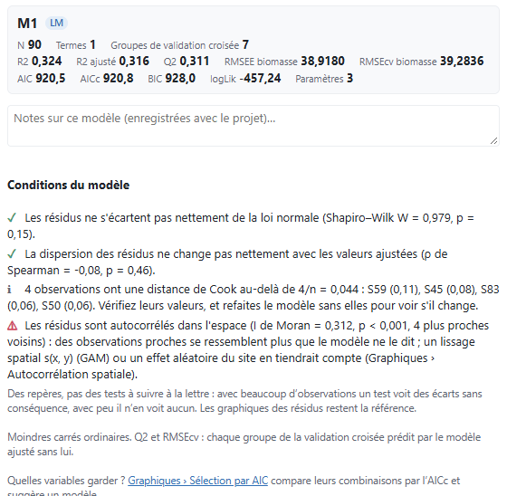

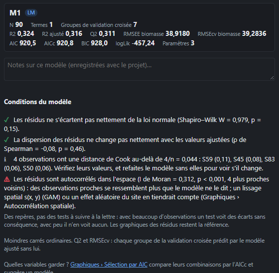
La biomasse baisse avec l'altitude : −0,8056 g/m² par mètre (IC à 95 % de −1,0520 à −0,5591, p = 4,8e-9, dans la vue Coefficients), et l'altitude explique un tiers de sa variation (R² = 0,324 ; Q² = 0,311 en validation croisée). Les conditions du modèle vérifient les résidus : leur loi (Shapiro–Wilk p = 0,15) et leur dispersion vont bien, quatre prairies pèsent plus que les autres sur l'ajustement (distance de Cook), et la dernière condition est en rouge : les résidus sont autocorrélés dans l'espace (I de Moran = 0,312, p < 0,001). Des prairies voisines s'écartent du modèle de la même façon.
4. L'I de Moran des résidus
Pourquoi c'est important : les tests d'un modèle tiennent ses résidus pour indépendants. Quatre-vingt-dix prairies dont les écarts ressemblent à ceux de leurs voisines apportent moins d'information que quatre-vingt-dix prairies indépendantes, et les p et les intervalles sont trop optimistes (Legendre, 1993).
Graphiques › Autocorrélation spatiale, M1 choisi : Valeurs : M1 · Résidus.

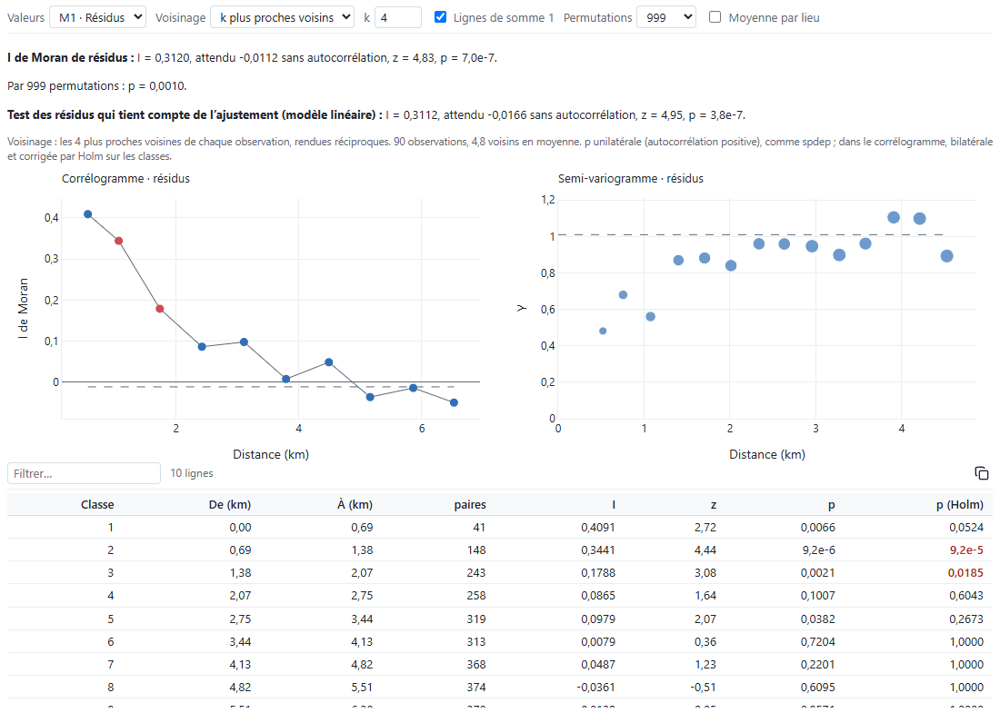

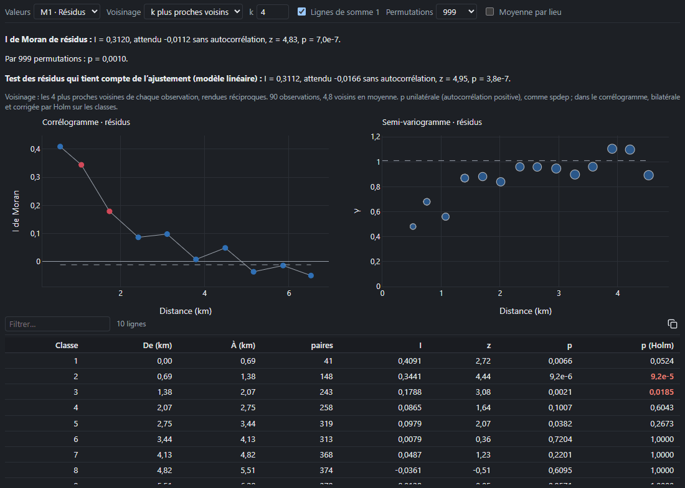
L'I de Moran compare chaque résidu à ceux de ses voisins, ici les 4 prairies les plus proches (rendues réciproques : 4,8 voisins en moyenne). Sans autocorrélation, il serait proche de −0,0112 ; il vaut 0,3120, z = 4,83, p = 7,0e-7, et aucune de 999 permutations des résidus entre les prairies n'en a donné autant (p = 0,0010). Pour un modèle linéaire, la seconde ligne est le test qui tient compte de l'ajustement (Cliff et Ord, 1981) : I = 0,3112, p = 3,8e-7.
Le corrélogramme donne l'I de Moran par classes de distance : 0,41 sous 0,69 km, 0,34 de 0,69 à 1,38 km, 0,18 de 1,38 à 2,07 km, puis moins de 0,1 ; les points rouges sont significatifs après la correction de Holm sur les classes. Le semi-variogramme dit la même chose à l'envers : la moitié du carré de l'écart entre deux résidus croît avec leur distance, et atteint la variance (en pointillés) vers 2 km. Les résidus se ressemblent jusqu'à 2 km environ.
Sur la carte, Couleur : M1 · résidu (les résidus standardisés) :

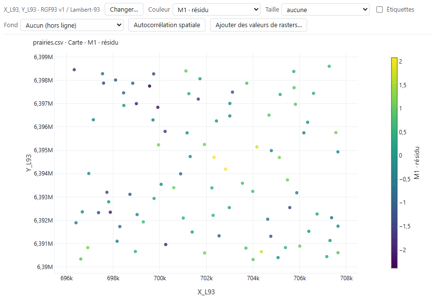

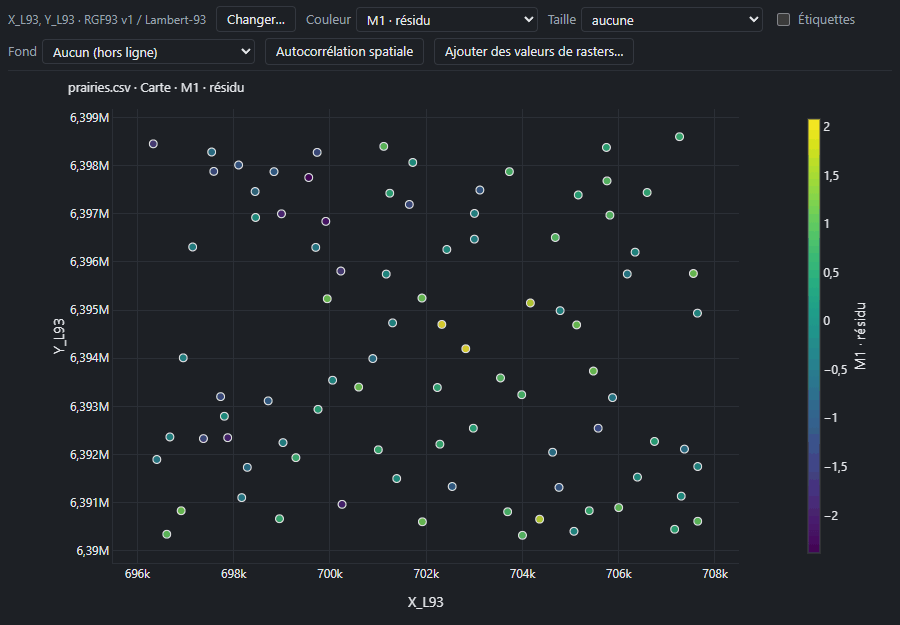
Le modèle surestime la biomasse du nord-ouest (résidus négatifs) et sous-estime celle du centre et de l'est : autre chose que l'altitude, un sol ou les pratiques des exploitations, s'organise dans l'espace.
5. Un modèle additif avec un lissage spatial
Dans Modèle › Quelle analyse ?, ouvrez Modèle additif avec un lissage spatial parmi les autres
possibilités : Nouveau modèle règle un GAM, de loi normale, et coche Lissage spatial
s(X_L93, Y_L93).

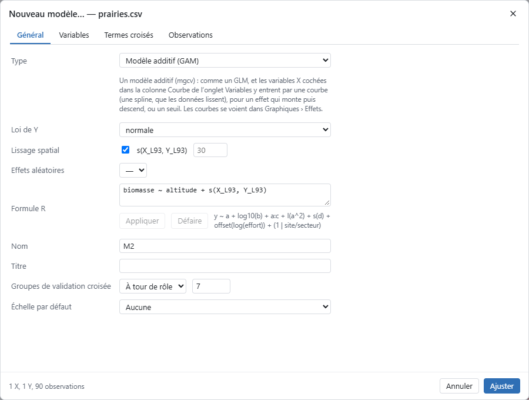

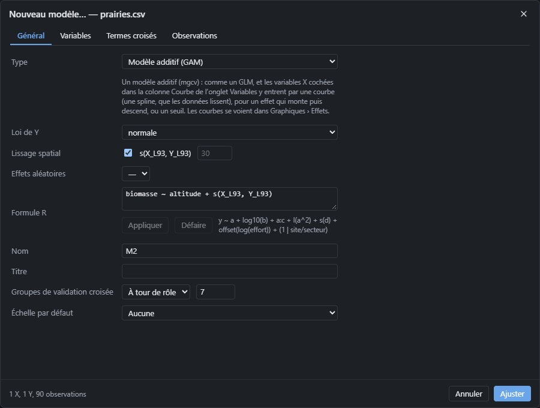
Le modèle garde l'altitude en droite, et ajoute une surface lisse des coordonnées, une spline en plaques minces (Wood, 2003) : elle prend la structure spatiale que l'altitude n'explique pas, aussi lisse que les données le demandent. Sa dimension de base est de 30 au plus (la case à côté) ; le REML choisit à quel point elle est lisse. Cliquez sur Ajuster : le modèle est M2.

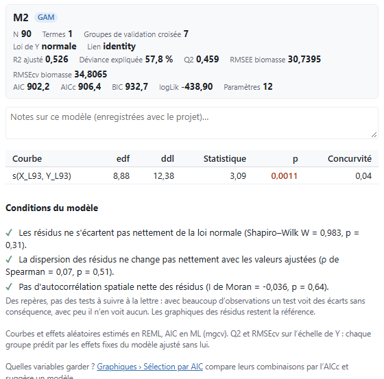

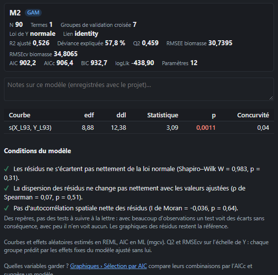
| M1, linéaire | M2, avec le lissage spatial | |
|---|---|---|
| altitude (g/m² par m) | −0,8056 [−1,0520 ; −0,5591] | −0,8476 [−1,1101 ; −0,5850] |
| R² ajusté | 0,316 | 0,526 |
| Q² (validation croisée) | 0,311 | 0,459 |
| AIC | 920,5 | 902,2 |
| I de Moran des résidus | 0,312, p < 0,001 | −0,036, p = 0,64 |
Le lissage utilise 8,88 degrés de liberté effectifs (edf ; 1 serait un plan) et il est significatif (p = 0,0011) ; sa concurvité, 0,04, dit que l'altitude ne l'explique pas : les deux ne se font pas concurrence. L'AIC baisse de 18 points, le Q² en validation croisée passe de 0,311 à 0,459, et il ne reste pas d'autocorrélation dans les résidus. L'altitude garde son effet, −0,85 g/m² par mètre, avec un intervalle un peu plus large : le modèle n'est plus trop sûr de lui. Les données ont été simulées avec −0,8.
La valeur du lissage à chaque prairie est une colonne des résultats de M2 ; sur la carte, Couleur : M2 · s(X_L93, Y_L93) :

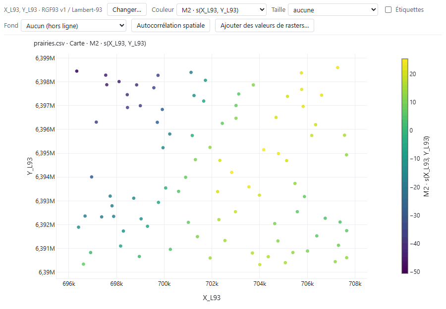

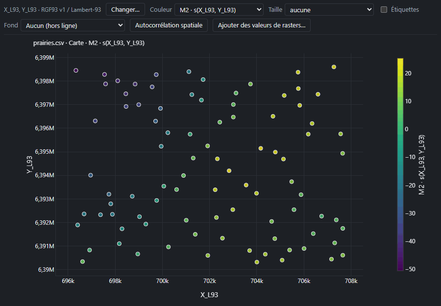
Il va de −50,5 g/m² au nord-ouest à +25,4 g/m² à l'est : ce que le lieu ajoute à la biomasse une fois l'altitude prise en compte. Il décrit ; il n'explique pas : les cartes des sols ou les registres des exploitations diraient pourquoi.
6. Un GeoPackage pour QGIS
Fichier › Exporter les données : dès que le projet a des coordonnées, l'export propose GeoPackage (QGIS) :

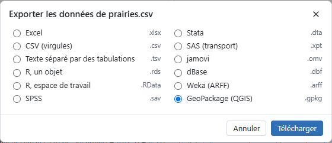

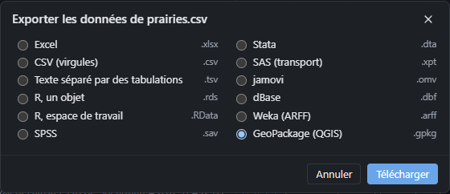
Le fichier contient un point par prairie en Lambert-93, avec toutes ses colonnes (biomasse,
altitude) : QGIS l'ouvre avec son système de coordonnées, sur n'importe quel fond. Les résultats
de M2 suivent le même chemin : choisissez M2, Fichier › Exporter les résultats du modèle,
GeoPackage : une couche de points avec la valeur ajustée, le résidu et le lissage de chaque
prairie, et à côté les tables des coefficients, de la qualité et des courbes. Fichier › Ouvrir
relit un GeoPackage (des points, ou les centroïdes de polygones).
Le texte des méthodes
Pour M2, Modèle › Texte pour la section Méthodes écrit, entre autres :
Lues dans des rasters à la position de chaque observation : « altitude » de altitude.tif (GeoTIFF, cellules de 50 m, RGF93 v1 / Lambert-93 ; par interpolation bilinéaire des quatre cellules les plus proches).
Nous avons ajusté un modèle additif généralisé (loi normale, lien identity ; Wood, 2017) avec 1 terme (altitude), un lissage spatial des coordonnées (« X_L93 » et « Y_L93 »), une spline de régression en plaques minces isotrope (Wood, 2003) de dimension de base 30.
Complétez-le avec la vérification des résidus : l'I de Moran des résidus de M1 et de ceux de M2, avec le voisinage (4 plus proches voisins). Le tutoriel du rapport rédige cette étude dans un document.
Pour aller plus loin
- Édition › Unités et descriptions donne son unité à la biomasse, g/m² : les axes et les textes la portent alors.
- Un effet aléatoire du site, plutôt qu'un lissage, convient à des observations groupées par site ; un test de Mantel avec la distance géographique, à un tableau d'espèces.
- Pour des longitudes et des latitudes, le lissage spatial est une spline sur la sphère,
s(lat, lon, bs = "sos"). - Fichier › Exporter vers R écrit un script qui réajuste M2 avec mgcv et trace le lissage sur une carte.
- Le guide : cartes, rasters, GeoPackage et autocorrélation spatiale, le lissage spatial d'un GAM.